?? Technical Info
▼
Version 1.0;
Tested on unity 2022 LTS and up;
Pipelines supported: built-in, HDRP, URP;
Dependecies: None;
01. Overview
▼
This framework allows for frictionless menu handling, eliminating one of unity's biggest pain points.
This system allows for optimized opening and closing of the menus, and allows linear and nested UI structures by utilizing unity's native parent-child hierarchy structure.
Apart from that, this system also incorporates the animator based transitions between menus
Optimized, easy to setup and use, user-oriented;
This asset includes:
- Menu System
- Integrated scene management (singular and additive scene loading supported)
- Menu opening history, allowing for easy interation of the Back buttons
- One-click creation of menu and transition objects, with custom setup wizards
- Utility features: Ping Menu and Open Menu in the inspector
- One-click creation of menu network
- Fuzzy Search on misspelt menu names
- Transition Logic
- Demo Scenes
- 3 pre-made, game-ready transitions that cover most of the transitions for games
- Defensive hierarchy enforcement
- Fully covered by custom error messages
02. Menu System Quick Start
▼
Setting up is easy and intuitive, and it takes no time.
To start, download and import the asset
In the assets folder, you will see a new folder called "StefaiGames", which holds all the data linked to this asset
Now, we can start with creating the menu system
Creating the Menu Network
Right-click in Hierarchy: GameObject -> UI -> TreeUI -> Menu Network
.
You will see this structure in your hierarchy:
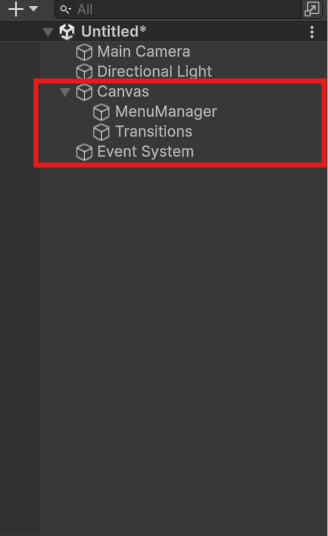
Where:
- Canvas - Root object of the entire UI
- MenuManager - Root object of all the menus
- Transitions - Root object of all the transitions
Creating A Menu
Creating a menu is as easy as right click in the Hierarchy: GameObject -> UI -> TreeUI -> Menu
This opens a setup window, which looks like this:
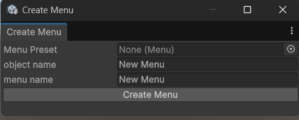
Where:
- Menu Preset - Prefab of the menu. Leave empty if creating the menu from scratch
- Object Name - Name of the object in the scene. Defaulting to "New Menu"
- Menu Name - Name of the menu, used in the seach algorythm. Defaulting to object name, if both are empty, default is "NewMenu"
Once you setup the menu, click on "Create Menu" to finish it. This will create the Menu object in the hierachy
Note: selected scene object matters. There are 3 cases:
- if no object is selected, the menu will be created as the child object of the MenuManager
- if the MenuManager or another menu is selected, the menu will be created as the child object of the selected object
- any other case, the menu will be created as the child object of the selected object
Let's talk about how the search algorithm works. There are 2 main functions that are used throughout the system:
MenuManager -> OpenMenu(string menuPath) and MenuManager -> TransitionToMenu(string menuPath)The
menuPath variable functions like a folder path, where each menu name is separated by a splitter character (defined in the MenuManager inspector, default
'/')example:
mainMenu/optionsMenu
03. Transitions
▼
Transitions are a very powerful tool, which allows users to esthetically boost the opening of the menus.
The Transitions are Animator based, which allows for full customizability of them.
Let's start by creating a transition object:
Right click on the hierarchy, and open GameObject -> UI -> TreeUI -> Transition
This will open a setup wizard for the transitions, which looks like this:
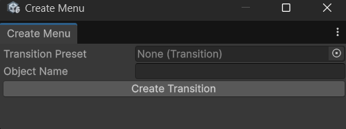
where:
- Transition Preset - prefab of the transition. Useful if you already created a transition that you want to use
- Object Name - Name of the transition scene object
Transition component, along with the Animator component.Scene Setup
Add a child Panel object to the transition you just created by right clicking on the tansition object in the scene, and selecting
UI -> Panel, and name it "Background" for exampleWhen that's done, you're ready to start with the animator setup.
Animator setup
Create the animator controller by right clicking in the project folder, and select
Create -> Animation -> Animator ControllerWhile you're there, create the animation clip for the transition, by selecting
Create -> Animation -> Animation ClipLink the animator controller to the transition you just created by dragging it into the animator controller field within the Animator on the transition object
In this example, we will create a fade transition, which is already included in the demos, so you can view the setup if you need more details.
Double click on the newly created Animator controller, which will open the Animator window.
Now, in that window, right click ->
Create state -> Empty. This state is going to be the idle state.Best practice is to name it "Idle". You set that at the top of the inspector, when that state is selected.
At this point, the animator should look like this:
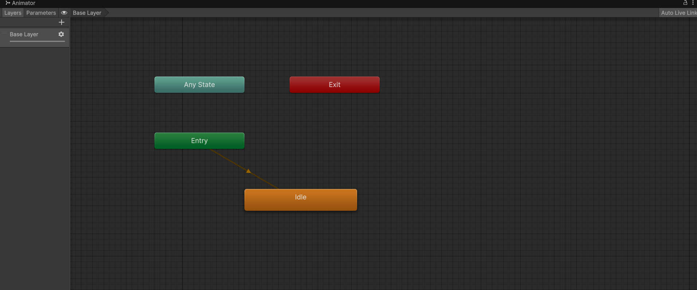
Now, open the parameters section at the top left, and add a trigger parameter called "StartTransition"
You do that by clicking the "+" icon at top left section, and selecting
Trigger.IMPORTANT NOTE: this is case sensitive. Make sure that the name is exactly the same, including the uppercase and lowercase letters.
Now, we can create the animation itself.
Now, we can head back to the project folder, where you can create the animation clip by right click ->
Create -> Animation -> Animation ClipDrag that newly created animation clip into the animator window, where it will pop up as a new block.
Now, right click on the Idle block, and select
Make Transition, and then click the newly added animation block to link them.Do the same in the opposite way: right click on the animation,
Make Transition, and click on the idle animation. With that, you created the transition loop.At this point, the animator should look something like this:
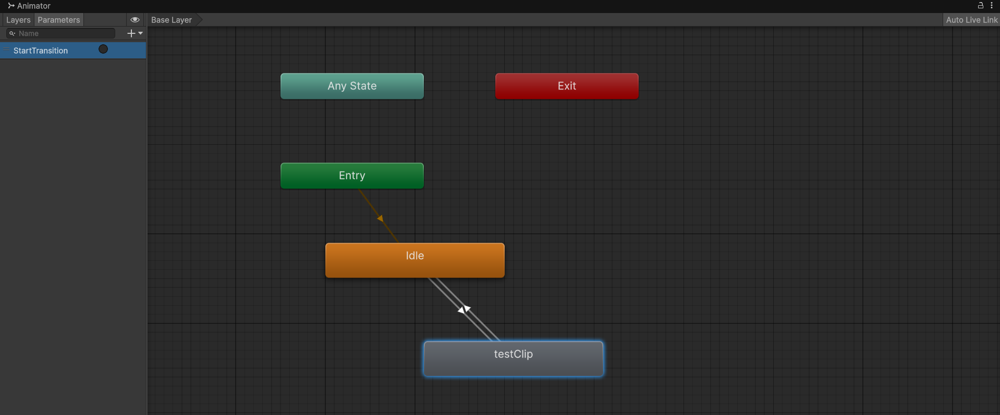 The idea is this: Idle animation runs most of the time on loop, up until we trigger the StartTransition trigger,
at which point the transition clip will play, and then return to Idle state.
Now, let's setup the transitions themselves. Select the transition from the Idle state to the transition animation (indicated by the arrow direction), and add the condition.
Unity will automatically set it to the StartTransition trigger we created, because it's the only parameter we currently have.
Now, we can start setting up the look of the transition
Animation Config
Double click the newly created clip to open the Animation window.
Now, we can setup the animation flow.
Since the animator is setup, we can just select the transition object in the scene, and the animation will be automatically opened.
We can click on the "Record" button, which allows you to automatically create animation keyframes while you're editing the oject.
After adding a few keyframes (which you will see later how it should look), you have to decide at which frame the menu should open.
When you decide, set the time to that frame, and add an animation event (left side of the animation window, the icon looks like a shield).
That will create the event, and open it's view in the inspector. Set the function to
Transition -> Methods -> OpenMenuWhen all that's done, the animation should look like this:
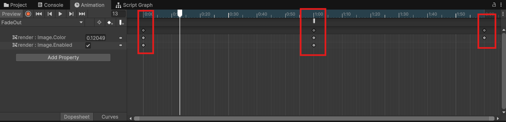
Where:
- Beginning - the panel is fully transparent
- Middle - the panel is fully opaque, and the menu opens (visible at the top, with a shield icon)
- End - the panel is fully transparent again
04. Interactions
▼
This asset supports 3 different workflows:
- Script based - allows for controlling the system through scripts
- Event based - allows for controlling the system through events
- Visual Scripting - complete visual scripting integration
note: all 3 interaction workflows are created to be equally powerful, utlizing overload functions for futher ease of use
let's break down each workflow individually:
1. Script based workflow
Let's explain this workflow with an example of the pause menu.
Create the menu architecture that looks like this:
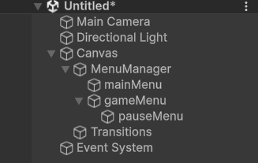
Now, with this setup, we can start creating the logic.
Create a script called
UIManagerIn the script, add the following code to the Update function:
if(Input.GetKeyDown(KeyCode.Escape))
{
MenuManager.Instance.OpenMenu(
MenuManager.Instance.GetMenu("gameMenu/pauseMenu").isOpen ?
"gameMenu" :
"gameMenu/pauseMenu");
}MenuManager.Instance.GetMenu function returns a reference to the menu. isOpen is a boolean which returns the state of the menu, IE. Is it open or closed. MenuManager.OpenMenu is a function which opens a menu under the specified path, and closes all the other ones.2. Event based workflow
Let's explain this workflow with an example of a button opening the game menu.
Create the menu architecture that looks like this:
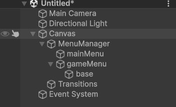
Now, with this setup, create a button within the
mainMenu, and name it StartGameButtonWithin the button OnClick event, add a listener. Set the MenuManager object as the target, and set the
MenuManager -> OpenMenu(string) as the functionIt should look something like this: 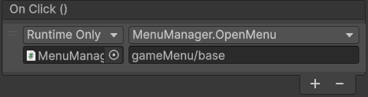
For the menuPath parameter, set
gameMenu/base where base menu is here to show the possibility of a nested architecture of the Menus.That's it, you can open the menu with a button.
Now, let's say you want to use a transition instead of plain opening of the menus. You can easily do that by adding a listener before the one we added.
All the functions come from the MenuManager script, and the first function called should be
MenuManager -> SetTargetTransition(int)Set the index to 0
The second function will be
MenuManager -> TransitionToMenu(string). Set the parameter to gameMenu/base.After that's done, you need to add the transition to the Transitions list. In our example, we will use the included Fade transition.
Right click in the hierarchy,
UI -> TreeUI -> Transition. For the transition Preset, drag and drop the Fade Transition prefab found in the
StefaiGames/TreeUI/demos/Transitions/FadeAfter finishing up the transition setup, you are good to go. The transition will trigger as wanted.
3. Visual Scripting
Before setting up our script graphs, make sure to import the StefaiGames assembly definition into the
edit -> project settings -> visual scripting -> Node library, and click on "Regenerate Nodes"After doing this, you're ready to interact with the menu system.
We will use the same example of the pause menu opening logic.
We will need the same hierarchy as in the first example, it should look like this:
Once that's done, add a component
Script Machine to the Canvas object.within that component, click the "New" button. This will open the folder view, allowing you to save the script graph to the desired location
Open that script graph by clicking on the field next to the button you just clicked.
Now, let's create the logic. First let's add the variable for the menu manager. On the right, you will see the variables tab. Select the object variables, and add one called MenuManager
For the type, select
StefaiGames -> TreeUI -> MenuSystem -> MenuManagerFor the value of the variable, drag the
MenuManager object into the fieldNow, we are ready to create the actual node setup. It should look something like this:
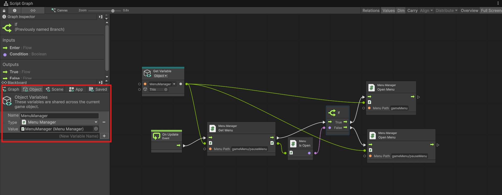
Now, I know this looks like a lot, but let's explain what each part does:
On Update- this is the node that kickstarts the chain. It's telling the engine to run this node tree every frameOn Update -> Get Menu -> isOpen- this flow allows us to access the state of the menu, IE, is it open
TheGetMenunode returns the Menu object, while theisOpennode returns it's stateif node- allows us to split the logic depending on the state of the menu.Open Menu- opens the actual menu. We have 2Open Menunodes, which fire depending on what state the menu is in
05. MenuManager - Script
▼
Menu Manager script handles the menus on a global level, and is attached to the root object of all the Menus.
This script is a singleton, meaning that there must be only a single instance of this script in the entire project.
Let's first look at the inspector of this script, which looks like this:
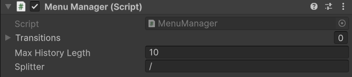
Where:
- Transitions - list of all the transitions, in the function
SetTargetTransition(int index), the index refers to the placement within this list - Max History Length - integer, maximum count of menus opened which the history keeps track of. Used for the function
OpenLastMenu() - Splitter - character used to parse the menu names from the menu path. Defaulted to
'/'and is used in theOpenMenu(string menuPath)
Now, let's get to the functions:
OpenMenu(string menuPath)[return type: void] -
Closes all the menus, and opens the one under the specified pathOpenLastMenu()[return type: void] -
Closes all the menus, and opens the last menu in historyTransitionToMenu(string menuPath)[return type: void] -
triggers the transition animation. Used in pair with theSetTargetTransition(int index)to define the target transition. This overload exists for event friendlinessTransitionToMenu(string menuPath, int transitionIndex)[return type: void] -
triggers the transition animation.LoadSceneSingle(int buildIndex)[return type: void] -
loads the scene under the specified build index in the singular scene loading modeLoadSceneAdditive(int buildIndex)[return type: void] -
loads the scene under the specified build index in the additive scene loading modeLoadSceneSingle(string sceneName)[return type: void] -
loads the scene under the specified scene name in the singular scene loading modeLoadSceneAdditive(string sceneName)[return type: void] -
loads the scene under the specified scene name in the additive scene loading modeGetMenu(string menuPath)[return type: Menu] -
returns the menu under the specified path
for event based interactions, this asset includes some helper functions that bypass the unity's current one-parameter limitation for event listeners:
SetTargetTransition(int transitionIndex)[return type: void] -
sets the target transition. Used for inspector eventsSetTargetScene(int targetBuildIndex)[return type: void] -
sets the target scene for the next menu opening, under the specified build index. NOTE: make sure that the scene is added to thefile -> build settings!SetTargetScene(string sceneName)[return type: void] -
sets the target scene for the next menu opening, under the specified scene name. NOTE: make sure that the scene is added to thefile -> build settings!SetTransitionLoadSceneMode(LoadSceneMode mode)[return type: void] -
sets the target scene loading mode for the next menu opening, under the specified mode
06. Menu - Script
▼
Menu script is attached to every Menu object. It handles the menu opening and closing on a local level.
It also contains it's submenus, which allows for infinitely deep menu structures.
Every Menu should be a child object of the MenuManager or another Menu
When talking about the inspector, it looks like this:
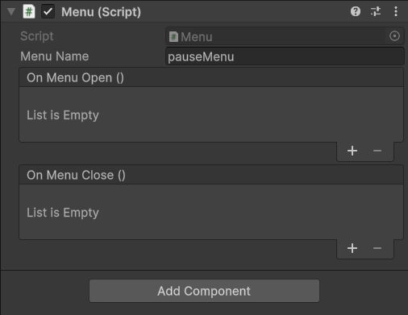
where:
- Menu Name - sting, name of the menu, which is used in the search algorithm
- On Menu Open - unity event, which allows for custom behaviour when this menu is opened
- On Menu Close - unity event, which allows for custom behaviour when this menu is closed
When talking about public functions, there is only 1, and that's:
RenameMenu(string newName) - renames the menu, and updates the internal Dictionary's reference.Note: the RenameMenu function is only needed for runtime updates through script.
When updating the menu name through the inspector, the internal dictionaries are handled by a custom inspector.
07. Transition - Script
▼
The Transition script is the glue between the MenuManager and the animator.
There are no inspector variables for this script, and no script-called functions
The only function is OpenMenu which is called in the previously mentioned animation event (see section 3)
08. Error Handling
▼
As this is a complex system, the entire menu system is covered with custom error messages.
Those messages would not only tell you that something is wrong, but explain to you how to fix it.
Let's break them down one by one:
There is no menu network to search through!
Cause: Trying to ping/open a menu from the inspector before the menu network is created.
- message:
There is already a menu network in the project, you must have only one in the entire project
Cause: trying to create a second instance of the menu manager.
Reason: MenuManager is a singleton, and thus there must be only 1 instance of it in the entire project
To allow for scene handling, the system moves the entire Menu network into theDontDestroyOnLoad
Which persists over scene loads. -
There is no subMenu of {menu parent} that bears the menu name {menu name}
Cause: The search algorithm found no matches to the needed menu
Reason: There are multiple possibilities, you either didn't create that menu yet, or you misspelt the menu name.
The fuzzy search prevents minor spelling errors, but for larger mistakes, it can't compensate.
Another reason can be that you put the menu into the wrong layer, or you mixed up the layers.
Fix Find the action which called the OpenMenu function, and update the menu path -
There is no menu {current menu name} in the menu manager list, did you mean {closest match}? If so, please spell the menu name correctly in the function which tried to open this menu
Cause: search algorithm didn't find any exact matches, but the fuzzy search found a close match.
Reason: As previously stated, there can be multiple reasons: misspelt menu name is the most common one.
Fix: Find the function call, and update the spelling on the menu -
There is no menu {Menu Name} and we couldn't find the closest match, please check that you input the correct naming order, and that you spelled the name correctly!
Cause: search algorithm didn't find any exact matches, and the fuzzy search wasn't able to compensate
Reason: As previously stated, multiple reasons exist: misspelt menu name, missed layer, you didn't create the menu yet, etc.
Fix: Find out which of the reasons was the problem, and fix them (either creating the wanted menu or updating the menu path in the function call)
-
the transition is not setup correctly. Please add the trigger parameter called 'StartTransition'
Cause: the "StartTransition" parameter in the target transition wasn't setup. Reason: You didn't follow the steps for transition setup outlined in the section 03.
Fix: Add the parameter "StartTransition". Check out the Section 03 for details -
Duplicate menu name detected on the same branch. '{originalName}' was renamed to '{menuName}'.
Cause: When renaming the menu, there was already one in the same layer with the same name.
Fix: No fix needed, the program automatically handled the duplication, as evident in the message. -
A menu can't have an empty name! Renaming the menu to 'New Menu'
Cause: You tried to rename a menu to an empty string. That's not allowed in this system.
Fix: No fix needed, the menu was automatically renamed to "New Menu", as evident in the message -
Every Menu must be a direct or indirect child of the menu manager!
Cause: moving the menu outside the MenuManager parent.
Fix: No fix needed, the system automatically reverted the reparenting of the object.
09. Best practices
▼The bridge between Animator states and the MenuManager logic.
10. Dev Notes
▼If you found any bugs, or want to suggest a feature, you can contact us via our support email